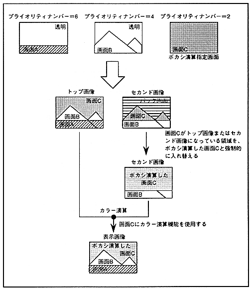

images will be displayed with the priority determined as usual.
∙ Make sure that the screen for performing blur calculation does not have transparent dots. If blur calculation is performed on a screen with transparent dots, correct calculation will not be performed at that boundary.
If you use the blur calculation function, you will not be able to insert the line color screen. Also, the extended color calculation function cannot be used.
The blur calculation function is shown in Figure 12.4.
Figure 12.4 Blur calculation function
